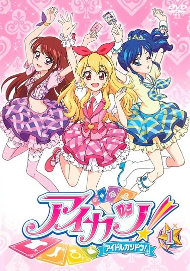

~アイカツ~
首頁
全部卡片
分類

偶像學園アイカツAIKATSU
是由BANDAI發行的偶像育成題材音樂卡牌類DCD街機遊戲系列。
並有電視動畫、手機遊戲、漫畫、小說等衍生作品。
是《偶像學園》、《偶像學園Stars》、《偶像學園Friends》、
《偶像學園 on Parade》、《偶像學園Planet》的總稱。
系列初代作品的宣傳口號為「國民的偶像試鏡遊戲」。
名稱中「アイカツ！」實際上是「アイドルカツドウ！」（偶像活動！）
本作在中文粉絲圈中被稱為「偶活系列」。